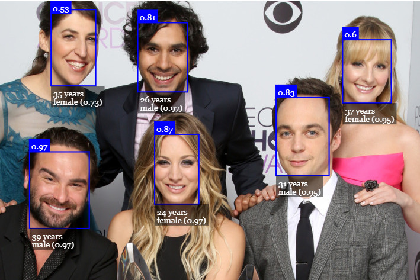

Machine Learning and Artificial Intelligence
Threat Detector


Implemented a model for prediction of life-threatening objects and achieved 99% precision, even with damaged images. This will allow you to detect any threat items like knives, guns and hammer in an image. You can visit the github link for the repo here.
Built Using: TensorFlow, OpenCV, Python
Face Detection using face-api.js and tensorflow.js with webcam
Face-api.js is a JavaScript face recognition API for the browser and nodejs implemented on top of tensorflow.js core. It uses your webcam and runs face-api.js to detect a face. You can visit the website here and github link for the repo here.
Built Using:JavaScript, face-apt.js, tensorflow.js, HTML, CSS
Hand Detection using handtrack.js with webcam

Handtrack.js is a library for prototyping realtime hand detection (bounding box), directly in the browser. Underneath, it uses a trained convolutional neural network that provides bounding box predictions for the location of hands in an image. The convolutional neural network (ssdlite, mobilenetv2) is trained using the tensorflow object detection api. You can visit the website here and github link for the repo here.
Built Using:JavaScript, Handtrack.js, HTML, CSS